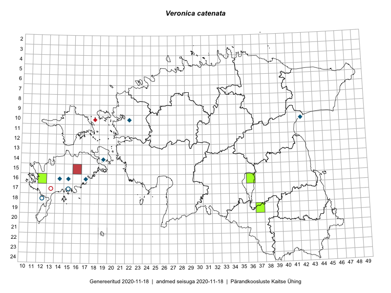

Veronica catenata
Uuendatud: 2016-12-02
Kaardile koondatud taksonid: Veronica catenata Pennell

Kaart põhineb 8 vaatlusel. Taksonit on leitud 5 ruudust.
Viited andmebaasikirjetele
- Tiit Hallikma, Toomas Kukk: 2015-07-20: 07-44: ala
- Eeva-Maria Jeletsky, Tarmo Niitla: 2015-08-10: 19-37: ala
- Helle Mäemets, Mare Leis: 2015-07-05: 16-36: GPS punkt
- Karin Kikas, Elle Rajandu: 2015-07-22: 17-15: ala
- Karin Kikas, Elle Rajandu: 2015-07-22: 17-15: GPS punkt
- Helle Mäemets, Mare Leis: 2015-07-06: 15-36: ala
- Helle Mäemets, Mare Leis, Jaak-Albert Metsoja: 2015-07-05: 16-36: GPS punkt
- Helle Mäemets, Mare Leis, Jaak-Albert Metsoja: 2015-07-05: 15-36: ala